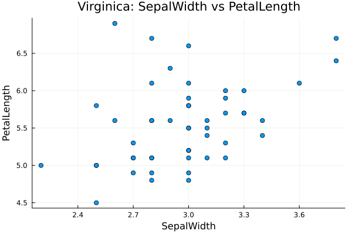
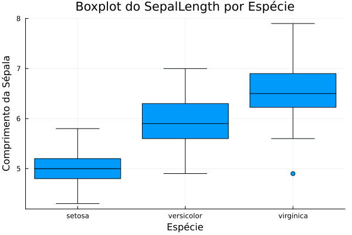
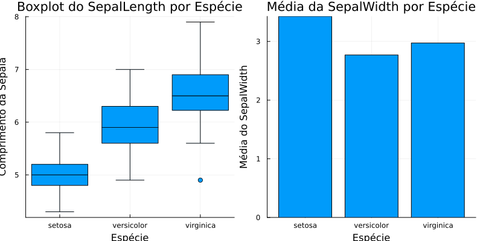
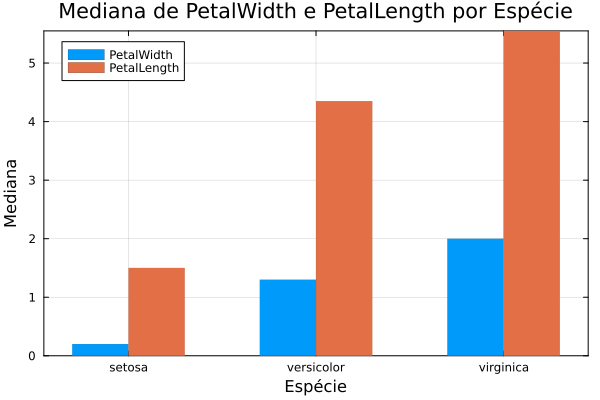
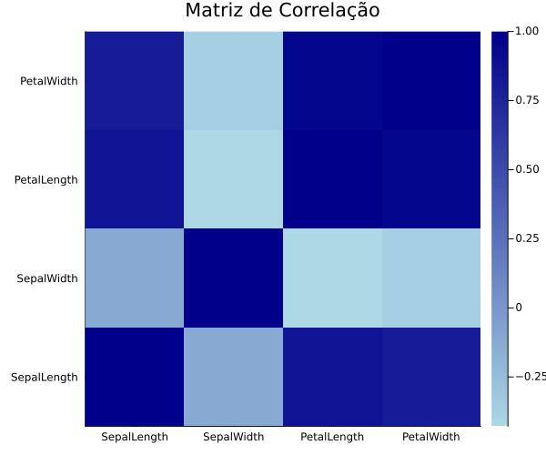
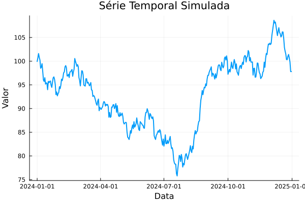

import Pkg
# Suprime mensagens e warnings durante a instalação dos pacotes
redirect_stdout(devnull) do
redirect_stderr(devnull) do
Pkg.add("RDatasets") # Datasets clássicos;
Pkg.add("StatsBase") # Estatísticas descritivas;
Pkg.add("StatsPlots") # Visualizações estatísticas;
Pkg.add("Distributions") # Distribuições estatísticas;
Pkg.add("Random") # Geração de números aleatórios;
Pkg.add("DataFrames") # Estrutura tipo planilha;
Pkg.add("Plots") # Biblioteca de gráficos;
Pkg.add("Statistics") # Funções como mean, median, etc;
Pkg.add("Dates") # Manipulação de datas.
Pkg.add("Measures") # Formatação
end
end
# Obs.: Apenas precisamos carregar o pacote uma vez por ambiente.Introdução à Análise Exploratória de Dados (EDA) em Julia
Aplicação
Visualização de Dados
Um guia completo e prático sobre como realizar Análise Exploratória de Dados (EDA) em Julia. Explore desde estatísticas descritivas, manipulação de dados, visualizações com Plots.jl e mais. Tudo com códigos prontos para aplicar nos seus projetos!
Introdução
A Análise Exploratória de Dados (EDA) é uma etapa fundamental na Ciência de Dados. Seu objetivo é entender a estrutura dos dados, identificar padrões, encontrar anomalias e formular hipóteses. Com a linguagem julia, voltada para alto desempenho e cálculo científico, a EDA pode ser feita de forma rápida e eficiente.
Benefícios de usar Julia para EDA
- Desempenho comparável ao C
- Sintaxe limpa e legível
- Grande suporte para operações matemáticas e estatísticas
- Ecossistema em crescimento com diversas bibliotecas voltadas para dados
- Integração com outras linguagens como Python, R e C/C++
Preparando o Ambiente
Instalação de Pacotes Essenciais
Dica: Use
Pkg.instantiate()para garantir que todas as dependências do seu projeto estejam resolvidas.
Carregando um Conjunto de Dados
using RDatasets
iris = dataset("datasets", "iris")150×5 DataFrame
Row │ SepalLength SepalWidth PetalLength PetalWidth Species
│ Float64 Float64 Float64 Float64 Cat…
─────┼─────────────────────────────────────────────────────────────
1 │ 5.1 3.5 1.4 0.2 setosa
2 │ 4.9 3.0 1.4 0.2 setosa
3 │ 4.7 3.2 1.3 0.2 setosa
4 │ 4.6 3.1 1.5 0.2 setosa
5 │ 5.0 3.6 1.4 0.2 setosa
6 │ 5.4 3.9 1.7 0.4 setosa
7 │ 4.6 3.4 1.4 0.3 setosa
8 │ 5.0 3.4 1.5 0.2 setosa
⋮ │ ⋮ ⋮ ⋮ ⋮ ⋮
144 │ 6.8 3.2 5.9 2.3 virginica
145 │ 6.7 3.3 5.7 2.5 virginica
146 │ 6.7 3.0 5.2 2.3 virginica
147 │ 6.3 2.5 5.0 1.9 virginica
148 │ 6.5 3.0 5.2 2.0 virginica
149 │ 6.2 3.4 5.4 2.3 virginica
150 │ 5.9 3.0 5.1 1.8 virginica
135 rows omittedfirst(iris, 5) # Visualização inicial das 5 primeiras linhas do dataset.5×5 DataFrame
Row │ SepalLength SepalWidth PetalLength PetalWidth Species
│ Float64 Float64 Float64 Float64 Cat…
─────┼───────────────────────────────────────────────────────────
1 │ 5.1 3.5 1.4 0.2 setosa
2 │ 4.9 3.0 1.4 0.2 setosa
3 │ 4.7 3.2 1.3 0.2 setosa
4 │ 4.6 3.1 1.5 0.2 setosa
5 │ 5.0 3.6 1.4 0.2 setosaO conjunto de dados Iris é um clássico da estatística e aprendizado de máquina. Ele contém medidas de sépalas e pétalas de três espécies de flores: Setosa, Versicolor e Virginica.
Estatísticas Descritivas
Vejamos como calcular estatísticas sumárias em julia usando os pacotes StatsBase e Statistics.
using StatsBase, Statistics
summarystats(iris.SepalWidth)Summary Stats:
Length: 150
Missing Count: 0
Mean: 3.057333
Std. Deviation: 0.435866
Minimum: 2.000000
1st Quartile: 2.800000
Median: 3.000000
3rd Quartile: 3.300000
Maximum: 4.400000# A função describe() também faz a mesma coisa.
# Obs.: julia também possui funções padrão como mean(), median(), std(), var(), ..., etc.As principais medidas descritivas que podemos extrair incluem:
Média e Mediana: Medidas de tendência central
Desvio-padrão, Variância e Intervalo Interquartil (IQR): Medidas de dispersão
Correlação entre variáveis
# Calculando a correlação de Pearson entre duas variáveis numéricas, e depois descrevendo uma das colunas
correlacao = cor(iris.SepalWidth, iris.SepalLength)-0.11756978413300205println("Correlação entre SepalWidth e SepalLength: ", correlacao)Correlação entre SepalWidth e SepalLength: -0.11756978413300205Aqui, vemos a correlação de Pearson para as variáveis SepalWidth e SepalLength usando a função cor().
Manipulação de Dados
Manipular o dataset é essencial para criar subconjuntos, transformar colunas e preparar os dados para análise. Usaremos os pacotes Distributions, Random e, mais importante, DataFrames.
Criando novas colunas
using Distributions, Random, DataFrames
# Agora vamos adicionar uma nova coluna ao nosso dataset
Random.seed!(123) # Tornando os resultados reprodutíveisTaskLocalRNG()iris.soma_col = iris.SepalWidth + iris.PetalWidth150-element Vector{Float64}:
3.7
3.2
3.4000000000000004
3.3000000000000003
3.8000000000000003
4.3
3.6999999999999997
3.6
3.1
3.2
⋮
5.4
4.6
5.5
5.8
5.3
4.4
5.0
5.699999999999999
4.8iris.normal_padrao = randn(150)150-element Vector{Float64}:
0.8082879284649668
-1.1220725081141734
-1.1046361023292959
-0.4169926351649334
0.28758798062385577
0.2298186980518676
-0.4217686643996927
-1.355590621101197
0.0694591410918936
-0.11732280453081337
⋮
-0.5245917996070839
1.2770297791112688
-1.0890471538422415
-1.088218513936287
0.7037583257923017
0.14332589323751366
0.14837536667608195
1.0096134137351438
0.028766636052271793iris.normal = rand(Normal(2, 0.5), 150)150-element Vector{Float64}:
1.8549928474436481
2.062061985303628
2.016057255141819
2.1161454686338543
1.3673429647209598
1.4120172154505015
1.9308005375653
1.6049470900443568
3.5293684931000344
1.0763261317866746
⋮
2.326721880967805
1.949391560407876
1.9438071314340073
2.728684959145093
2.259371762456528
1.7372020985648153
2.5003474504889027
1.377130936042281
2.3064311304205996# Perceba que conseguimos criar uma normal padrão usando a função randn(). Já para uma normal com outros parêmtros de locação e escala utilizamos a função Normal()
first(iris, 5)5×8 DataFrame
Row │ SepalLength SepalWidth PetalLength PetalWidth Species soma_col no ⋯
│ Float64 Float64 Float64 Float64 Cat… Float64 Fl ⋯
─────┼──────────────────────────────────────────────────────────────────────────
1 │ 5.1 3.5 1.4 0.2 setosa 3.7 ⋯
2 │ 4.9 3.0 1.4 0.2 setosa 3.2
3 │ 4.7 3.2 1.3 0.2 setosa 3.4
4 │ 4.6 3.1 1.5 0.2 setosa 3.3
5 │ 5.0 3.6 1.4 0.2 setosa 3.8 ⋯
2 columns omittedCaso queira adicionar uma nova coluna ao seu dataset, por exemplo, comparar a soma - largura da sépala com a largura da pétala - para cada flor, apenas nomeie a sua nova coluna no formato dados.nova_coluna = nova_coluna. É importante ressaltar que len(nova_coluna) = len(dados.coluna_qualquer), ou seja, o tamanho n da coluna (150 observações, no nosso exemplo) tem que ser igual no dataset inteiro.
Filtragem de dados
# Agora vejamos como filtrar valores no nosso dataset
flores_grandes = filter(row -> row.SepalLength > 7, iris) # Filtrando apenas as flores cuja sépala mede mais do que 7cm12×8 DataFrame
Row │ SepalLength SepalWidth PetalLength PetalWidth Species soma_col ⋯
│ Float64 Float64 Float64 Float64 Cat… Float64 ⋯
─────┼──────────────────────────────────────────────────────────────────────────
1 │ 7.1 3.0 5.9 2.1 virginica 5.1 ⋯
2 │ 7.6 3.0 6.6 2.1 virginica 5.1
3 │ 7.3 2.9 6.3 1.8 virginica 4.7
4 │ 7.2 3.6 6.1 2.5 virginica 6.1
5 │ 7.7 3.8 6.7 2.2 virginica 6.0 ⋯
6 │ 7.7 2.6 6.9 2.3 virginica 4.9
7 │ 7.7 2.8 6.7 2.0 virginica 4.8
8 │ 7.2 3.2 6.0 1.8 virginica 5.0
9 │ 7.2 3.0 5.8 1.6 virginica 4.6 ⋯
10 │ 7.4 2.8 6.1 1.9 virginica 4.7
11 │ 7.9 3.8 6.4 2.0 virginica 5.8
12 │ 7.7 3.0 6.1 2.3 virginica 5.3
2 columns omitted# flores_grandes1 = iris[iris.SepalLength .> 7, :] Outra forma de filtrar
first(flores_grandes, 5)5×8 DataFrame
Row │ SepalLength SepalWidth PetalLength PetalWidth Species soma_col ⋯
│ Float64 Float64 Float64 Float64 Cat… Float64 ⋯
─────┼──────────────────────────────────────────────────────────────────────────
1 │ 7.1 3.0 5.9 2.1 virginica 5.1 ⋯
2 │ 7.6 3.0 6.6 2.1 virginica 5.1
3 │ 7.3 2.9 6.3 1.8 virginica 4.7
4 │ 7.2 3.6 6.1 2.5 virginica 6.1
5 │ 7.7 3.8 6.7 2.2 virginica 6.0 ⋯
2 columns omittedPara filtrar nossos dados, podemos usar a função filter(), no formato filter(row ou col -> condição, dados) e assim criamos uma condição para filtrar as linhas do dataset. Uma alternativa seria usar o formato dados[condição, :].
Agrupamento e seleção
Selecionando as colunas SepalLength e PetalWidth para análise.
# Como selecionar e agrupar colunas
selecao = select(iris, :SepalLength, :PetalWidth) # Selecionando colunas150×2 DataFrame
Row │ SepalLength PetalWidth
│ Float64 Float64
─────┼─────────────────────────
1 │ 5.1 0.2
2 │ 4.9 0.2
3 │ 4.7 0.2
4 │ 4.6 0.2
5 │ 5.0 0.2
6 │ 5.4 0.4
7 │ 4.6 0.3
8 │ 5.0 0.2
⋮ │ ⋮ ⋮
144 │ 6.8 2.3
145 │ 6.7 2.5
146 │ 6.7 2.3
147 │ 6.3 1.9
148 │ 6.5 2.0
149 │ 6.2 2.3
150 │ 5.9 1.8
135 rows omittedfirst(selecao, 5)5×2 DataFrame
Row │ SepalLength PetalWidth
│ Float64 Float64
─────┼─────────────────────────
1 │ 5.1 0.2
2 │ 4.9 0.2
3 │ 4.7 0.2
4 │ 4.6 0.2
5 │ 5.0 0.2Dataframes agrupados por Species.
grupo = groupby(iris, :Species) # Agrupando por categorias de uma colunas, nesse caso por espécie (virginica, setosa e versicolor)GroupedDataFrame with 3 groups based on key: Species
First Group (50 rows): Species = CategoricalArrays.CategoricalValue{String, UInt8} "setosa"
Row │ SepalLength SepalWidth PetalLength PetalWidth Species soma_col no ⋯
│ Float64 Float64 Float64 Float64 Cat… Float64 Fl ⋯
─────┼──────────────────────────────────────────────────────────────────────────
1 │ 5.1 3.5 1.4 0.2 setosa 3.7 ⋯
2 │ 4.9 3.0 1.4 0.2 setosa 3.2
⋮ │ ⋮ ⋮ ⋮ ⋮ ⋮ ⋮ ⋱
49 │ 5.3 3.7 1.5 0.2 setosa 3.9
50 │ 5.0 3.3 1.4 0.2 setosa 3.5
2 columns and 46 rows omitted
⋮
Last Group (50 rows): Species = CategoricalArrays.CategoricalValue{String, UInt8} "virginica"
Row │ SepalLength SepalWidth PetalLength PetalWidth Species soma_col ⋯
│ Float64 Float64 Float64 Float64 Cat… Float64 ⋯
─────┼──────────────────────────────────────────────────────────────────────────
1 │ 6.3 3.3 6.0 2.5 virginica 5.8 ⋯
2 │ 5.8 2.7 5.1 1.9 virginica 4.6
⋮ │ ⋮ ⋮ ⋮ ⋮ ⋮ ⋮ ⋱
50 │ 5.9 3.0 5.1 1.8 virginica 4.8
2 columns and 47 rows omittedAplicação de funções e ordenação
Aplicando a função y = log(x) para a coluna SepalLength, retornando o vetor de valores y.
first(map(x -> log(x), iris.SepalLength), 10)10-element Vector{Float64}:
1.62924053973028
1.589235205116581
1.547562508716013
1.5260563034950492
1.6094379124341003
1.6863989535702288
1.5260563034950492
1.6094379124341003
1.4816045409242156
1.589235205116581Ordenando o dataset com base no tamanho da pétala (PetalLength), em ordem crescente.
first(sort(iris, :PetalLength), 10)10×8 DataFrame
Row │ SepalLength SepalWidth PetalLength PetalWidth Species soma_col no ⋯
│ Float64 Float64 Float64 Float64 Cat… Float64 Fl ⋯
─────┼──────────────────────────────────────────────────────────────────────────
1 │ 4.6 3.6 1.0 0.2 setosa 3.8 ⋯
2 │ 4.3 3.0 1.1 0.1 setosa 3.1
3 │ 5.8 4.0 1.2 0.2 setosa 4.2
4 │ 5.0 3.2 1.2 0.2 setosa 3.4
5 │ 4.7 3.2 1.3 0.2 setosa 3.4 ⋯
6 │ 5.4 3.9 1.3 0.4 setosa 4.3
7 │ 5.5 3.5 1.3 0.2 setosa 3.7
8 │ 4.4 3.0 1.3 0.2 setosa 3.2
9 │ 5.0 3.5 1.3 0.3 setosa 3.8 ⋯
10 │ 4.5 2.3 1.3 0.3 setosa 2.6
2 columns omittedÉ importante lembrar que muitas dessas funções possuem muita importância durante o tratamento dos dados no início de uma análise, mas também durante a criação de gráficos e tabelas.
Visualização de Dados
Agora vejamos como visualizar os nossos dados e variáveis de interesse através de gráficos! (aqui temos um tutorial para gráficos!).
Histogramas e Scatterplots
Criando histogramas e scatterplots para visualizar a distribuição dos dados
using Plots
using Measures
plot(
histogram(iris.SepalWidth, title="Distribuição da Largura da Sépala", xlabel="Largura", ylabel="Frequência", margin=5mm, label=""),
scatter(iris.PetalWidth, iris.PetalLength, title="Largura x Comprimento da Pétala", xlabel="Largura", ylabel="Comprimento", margin=5mm, label=""),
layout=(1, 2),
size=(900, 400)
)
Gráficos de dispersão (scatterplots) são úteis para visualizar a relação entre duas variáveis contínuas, enquanto histogramas ajudam a entender a distribuição de uma única variável. Vamos agora aprender filtrar e selecionar os dados que queremos visualizar.
using StatsPlots
# Filtrando apenas as linhas com Species == "virginica"
virginica = filter(row -> row.Species == "virginica", iris)50×8 DataFrame
Row │ SepalLength SepalWidth PetalLength PetalWidth Species soma_col ⋯
│ Float64 Float64 Float64 Float64 Cat… Float64 ⋯
─────┼──────────────────────────────────────────────────────────────────────────
1 │ 6.3 3.3 6.0 2.5 virginica 5.8 ⋯
2 │ 5.8 2.7 5.1 1.9 virginica 4.6
3 │ 7.1 3.0 5.9 2.1 virginica 5.1
4 │ 6.3 2.9 5.6 1.8 virginica 4.7
5 │ 6.5 3.0 5.8 2.2 virginica 5.2 ⋯
6 │ 7.6 3.0 6.6 2.1 virginica 5.1
7 │ 4.9 2.5 4.5 1.7 virginica 4.2
8 │ 7.3 2.9 6.3 1.8 virginica 4.7
⋮ │ ⋮ ⋮ ⋮ ⋮ ⋮ ⋮ ⋱
44 │ 6.8 3.2 5.9 2.3 virginica 5.5 ⋯
45 │ 6.7 3.3 5.7 2.5 virginica 5.8
46 │ 6.7 3.0 5.2 2.3 virginica 5.3
47 │ 6.3 2.5 5.0 1.9 virginica 4.4
48 │ 6.5 3.0 5.2 2.0 virginica 5.0 ⋯
49 │ 6.2 3.4 5.4 2.3 virginica 5.7
50 │ 5.9 3.0 5.1 1.8 virginica 4.8
2 columns and 35 rows omitted
# Selecionando apenas as colunas de interesse, nesse caso SepalWidth e PetalLength
dados_virg = select(virginica, :SepalWidth, :PetalLength)50×2 DataFrame
Row │ SepalWidth PetalLength
│ Float64 Float64
─────┼─────────────────────────
1 │ 3.3 6.0
2 │ 2.7 5.1
3 │ 3.0 5.9
4 │ 2.9 5.6
5 │ 3.0 5.8
6 │ 3.0 6.6
7 │ 2.5 4.5
8 │ 2.9 6.3
⋮ │ ⋮ ⋮
44 │ 3.2 5.9
45 │ 3.3 5.7
46 │ 3.0 5.2
47 │ 2.5 5.0
48 │ 3.0 5.2
49 │ 3.4 5.4
50 │ 3.0 5.1
35 rows omitted
# Scatterplot
scatter(dados_virg.SepalWidth, dados_virg.PetalLength,
xlabel = "SepalWidth",
ylabel = "PetalLength",
title = "Virginica: SepalWidth vs PetalLength",
legend = false)
Boxplots e Gráficos de Barras
using DataFrames, StatsPlots
# Criando boxplots e gráficos de barras para visualizar a distribuição dos dados
box = boxplot(iris.Species, iris.SepalLength, xlabel="Espécie", ylabel="Comprimento da Sépala", title="Boxplot do SepalLength por Espécie", label="")
# Agrupando por espécie e calculando a média do comprimento da pétala
resumo = combine(groupby(iris, :Species), :SepalWidth => mean => :MediaSepalWidth)3×2 DataFrame
Row │ Species MediaSepalWidth
│ Cat… Float64
─────┼─────────────────────────────
1 │ setosa 3.428
2 │ versicolor 2.77
3 │ virginica 2.974
# Gráfico de barras
barras = bar(resumo.Species, resumo.MediaSepalWidth,
xlabel = "Espécie",
ylabel = "Média do SepalWidth",
title = "Média da SepalWidth por Espécie",
legend = false)
plot(box, barras, layout=(1, 2), size=(800, 400))
using DataFrames, StatsPlots
# Agrupando por espécie e calculando a média do comprimento da pétala
resumo = combine(groupby(iris, :Species), :SepalLength => mean => :MediaSepalLength)3×2 DataFrame
Row │ Species MediaSepalLength
│ Cat… Float64
─────┼──────────────────────────────
1 │ setosa 5.006
2 │ versicolor 5.936
3 │ virginica 6.588
# Gráfico de barras
bar(resumo.Species, resumo.MediaSepalLength,
xlabel = "Espécie",
ylabel = "Média do SepalLength",
title = "Média do Comprimento da Sépala por Espécie",
legend = false)
Boxplots são ótimos para visualizar a dispersão e identificar outliers, enquanto gráficos de barras ajudam a entender a frequência de categorias. Vamos agora agrupar os dados e visualizar mais de uma variável.
using DataFrames, StatsPlots, Statistics
# Agrupando os dados e calculando suas medianas
df_bar = combine(groupby(iris, :Species),
:PetalWidth => median,
:PetalLength => median
)3×3 DataFrame
Row │ Species PetalWidth_median PetalLength_median
│ Cat… Float64 Float64
─────┼───────────────────────────────────────────────────
1 │ setosa 0.2 1.5
2 │ versicolor 1.3 4.35
3 │ virginica 2.0 5.55
# Organizando os dados
y = Matrix(select(df_bar, Not(:Species))) 3×2 Matrix{Float64}:
0.2 1.5
1.3 4.35
2.0 5.55x = df_bar.Species 3-element CategoricalArrays.CategoricalArray{String,1,UInt8}:
"setosa"
"versicolor"
"virginica"
groupedbar(
x,
y,
bar_position = :dodge,
xlabel = "Espécie",
ylabel = "Mediana",
title = "Mediana de PetalWidth e PetalLength por Espécie",
label = ["PetalWidth" "PetalLength"],
bar_width = 0.6,
lw = 0,
framestyle = :box
)
Aqui, separamos a mediana do comprimento e largura da pétala (PetalLength e PetalWidth) para cada espécie, assim conseguindo visualizar conjuntamente a medida dessas variáveis em diferentes grupos.
Matriz de Correlação (Heatmap)
using StatsPlots
# Criando uma matriz de correlação e visualizando com um heatmap
dados_num = Matrix(iris[:, 1:4])150×4 Matrix{Float64}:
5.1 3.5 1.4 0.2
4.9 3.0 1.4 0.2
4.7 3.2 1.3 0.2
4.6 3.1 1.5 0.2
5.0 3.6 1.4 0.2
5.4 3.9 1.7 0.4
4.6 3.4 1.4 0.3
5.0 3.4 1.5 0.2
4.4 2.9 1.4 0.2
4.9 3.1 1.5 0.1
⋮
6.9 3.1 5.1 2.3
5.8 2.7 5.1 1.9
6.8 3.2 5.9 2.3
6.7 3.3 5.7 2.5
6.7 3.0 5.2 2.3
6.3 2.5 5.0 1.9
6.5 3.0 5.2 2.0
6.2 3.4 5.4 2.3
5.9 3.0 5.1 1.8cor_matriz = cor(dados_num)4×4 Matrix{Float64}:
1.0 -0.11757 0.871754 0.817941
-0.11757 1.0 -0.42844 -0.366126
0.871754 -0.42844 1.0 0.962865
0.817941 -0.366126 0.962865 1.0var_nomes = names(iris)[1:4]4-element Vector{String}:
"SepalLength"
"SepalWidth"
"PetalLength"
"PetalWidth"
# Plotando a matriz de correlação
heatmap(
cor_matriz,
xticks=(1:4, var_nomes),
yticks=(1:4, var_nomes),
title="Matriz de Correlação",
color=:blues,
size=(600, 500)
)
A matriz de correlação é uma ferramenta poderosa para entender a relação entre variáveis. O heatmap ajuda a visualizar essas correlações de forma intuitiva.
Q-Q Plot (Normalidade)
using Distributions, StatsPlots
# Usando o pacote StatsPlots para criar um Q-Q plot
qqplot(Normal(), iris.PetalLength,
xlabel="Quantis Teóricos",
ylabel="Quantis Amostrais",
title="Q-Q Plot de PetalLength")
Q-Q plots são úteis para verificar a normalidade dos dados. Se os pontos seguirem a linha reta, os dados possivelmente seguem uma distribuição normal. Nesse caso, vemos que a variável PetalLength não segue uma distribuição Normal.
Série Temporal
Por último, criamos uma série temporal simulada para ilustrar como visualizar dados ao longo do tempo. A função cumsum() é usada para calcular a soma acumulada (no nosso caso, acumular número aleatório de uma distribuição Normal padrão), e o gráfico mostra a evolução dos valores ao longo do ano.
using Dates
# Gerando uma série temporal simulada
datas = Date(2024,1,1):Day(1):Date(2024,12,31)Date("2024-01-01"):Day(1):Date("2024-12-31")valores = cumsum(randn(length(datas))) .+ 100366-element Vector{Float64}:
99.93356752809319
100.68920283747816
101.60107790420861
100.80867532750842
100.22443383684116
98.5038393366958
98.73218906091287
99.46750522556687
97.83974470691781
96.0199549308198
⋮
101.50097700552809
100.33548507315055
100.31383058790584
101.02944569713357
101.40802609294452
100.68350893826006
99.82193264955082
97.79657769045133
97.80224894941702
# Plotando a série temporal
plot(datas, valores,
xlabel="Data", ylabel="Valor",
title="Série Temporal Simulada",
linewidth=2, label="")
Considerações Finais
A Análise Exploratória de Dados (EDA) é uma etapa crucial para entender os dados e preparar o caminho para análises mais profundas. A linguagem julia, com sua sintaxe clara e desempenho elevado, é uma excelente escolha para essa tarefa.
Explore mais: experimente outros pacotes como
CSV.jlpara ler arquivos externos,GLM.jlpara regressão, eGadfly.jlpara visualizações mais elaboradas.
Nota
Ferramentas de IA foram utilizadas para correção ortográfica e aprimoramento do texto.